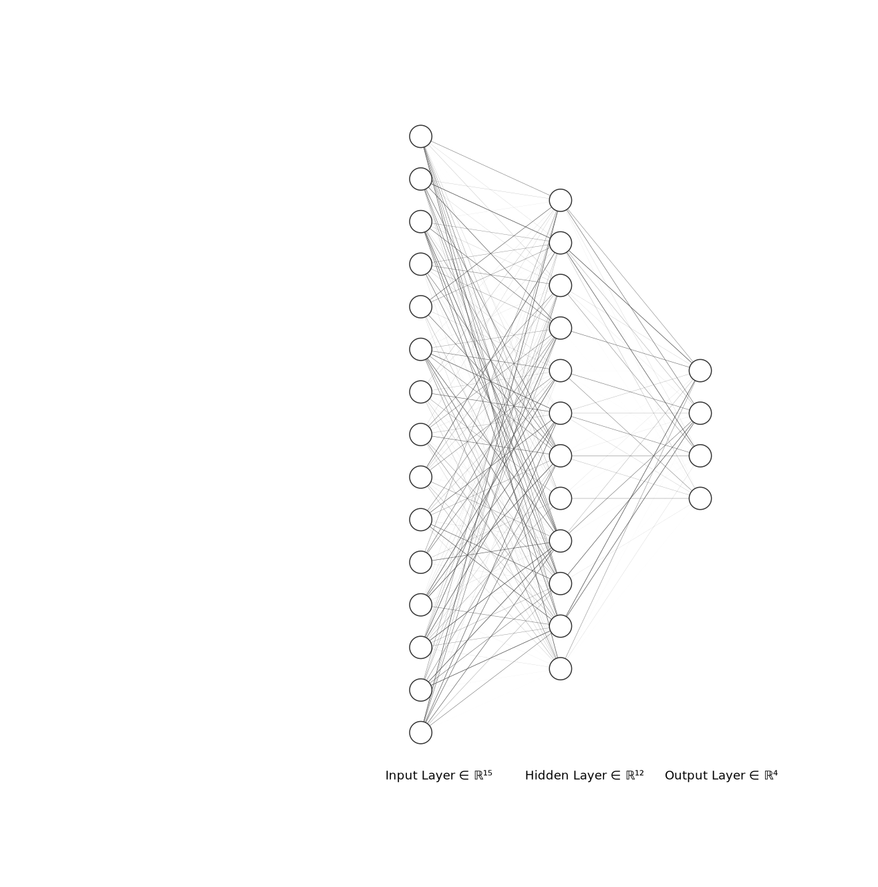

You might say that Software Engineers are mad people. They do weird stuff for no good reason… and you’re probably right! So why not a FizzBuzz in the most inefficient way.
This post is inspired by this super funny post from Joel Grus: Fizz Buzz in Tensorflow. Given that I’m working with Pytorch, I thought it would be a good idea to do something similar.
So let’s get to the code!
Code
First the imports:
%matplotlib inline
import torch
import torch.nn as nn
import numpy as np
from torch import optim
from torch.utils.data import DataLoader, TensorDataset
from tqdm.notebook import trange
from sklearn import metrics
I’ve added a flag to run on CPU or GPU: is_using_gpu.
I don’t expect any speedup by running the code on this post on GPU, but it’s nice to know that the code works in both platforms.
is_using_gpu = torch.cuda.is_available()
is_using_gpu = False
if is_using_gpu:
device = torch.device("cuda")
else:
device = torch.device("cpu")
device
device(type='cpu')
Now things get more interesting.
The goal of this Neural Network (NN) is to identify which category a number is:
- Category 1: A “fizzbuzz”, when the number is divisible by 3 and 5
- Category 2: A “fizz”, when the number is divisible by 3
- Category 3: A “buzz”, when the number is divisible by 5
- Category 4: When the number belongs to none of the above categories
As all problems for training neural networks, we now need data. There are 2 ways to do this for the fizzbuzz problem:
-
Hire a lot of people to label numbers! We could use Amazon’s Mechanical Turk and take advantage of the cloud. This should be easy for “turkers” right?
-
Or we cheat and implement the function ourselves as you would do on your technical interview:
def fizzbuzz(number: int) -> str:
if number % 15 == 0:
return "fizzbuzz"
elif number % 3 == 0:
return "fizz"
elif number % 5 == 0:
return "buzz"
return str(number)
assert fizzbuzz(1) == "1"
assert fizzbuzz(3) == "fizz"
assert fizzbuzz(5) == "buzz"
assert fizzbuzz(15) == "fizzbuzz"
Input layer
The input layer is how we “feed” the neural network. It’s the input numbers, such as 1, 3, 7, 10…
While we could make the input layer be a simple number, let’s be fancy and model it as a vector of binary numbers:
NUM_DIGITS = 15
def encode_binary(n):
return np.array([n >> d & 1 for d in range(NUM_DIGITS)], dtype=np.float32)
assert len(encode_binary(2)) == NUM_DIGITS
print(f"2 = {encode_binary(2)}")
print(f"maximum value = {encode_binary(2**NUM_DIGITS-1)}")
2 = [0. 1. 0. 0. 0. 0. 0. 0. 0. 0. 0. 0. 0. 0. 0.]
maximum value = [1. 1. 1. 1. 1. 1. 1. 1. 1. 1. 1. 1. 1. 1. 1.]
Output layer
The output of the NN is a vector. Each of its values will represent the “likelihood” of the input being of a specific category. In this case, each position of the output vector means “how much the NN thinks the input belongs to that specific category”:
- Position
0: fizzbuzz - Position
1: fizz - Position
2: buzz - Position
3: none of the above categories, so return the number itself
So, as an example, imagine that the prediction of the network is the vector
[-15, 2, 100, 3]. In this case the maximum value is at position 2 (value is 100),
so this is a buzz.
Converting this idea into code:
def fizzbuzz_decode(number: int, prediction: torch.Tensor) -> str:
m = prediction.argmax()
return ["fizzbuzz", "fizz", "buzz", str(number)][m]
The argmax() function returns the index of the element with the largest value in the
vector. See the pytorch docs
for a more detailed explanation.
PS: It is odd that this method also contains a number parameter, but that’s because when a
number is not a fizzbuzz, fizz or buzz, then we should return the number itself.
The dataset
As any labeled dataset, it consists of two parts:
- X: The input, which is the number converted into binary with the
encode_binary()method. - Y: The labeled output, in this case if
Xisfizz,buzz,fizzbuzzornone of the above.
To create our Dataset using Pytorch dataset classes, I used the TensorDataset.
The X
For X, the training dataset will consist of all numbers from \(101\) to \(2^N\), where
\(N = number\ of\ digits\). It doesn’t start from 1 because it would be cheating, since
the fizzbuzz problem states that we should be testing on the range of [1, 100] numbers
and we don’t want the network to learn the answers to the fizzbuzz problem, but the
“general idea of the fizzbuzz problem”.
The Y
For Y, we encode the categories as numbers, or:
def fizzbuzz_encode_answer_to_category_number(answer: str) -> int:
assert type(answer) == str
try:
return ["fizzbuzz", "fizz", "buzz"].index(answer)
except ValueError:
return 3
Putting the dataset together
Let’s put the full dataset together by creating the TensorDataset object:
NUM_CATEGORIES = 4
def create_fizzbuzz_train_dataset() -> TensorDataset:
values = range(101, 2 ** NUM_DIGITS)
x = torch.tensor([encode_binary(v) for v in values], device=device, requires_grad=False)
y = torch.tensor([fizzbuzz_encode_answer_to_category_number(fizzbuzz(v)) for v in values], device=device, requires_grad=False)
return TensorDataset(x, y)
dataset = create_fizzbuzz_train_dataset()
print(f"Dataset size: {len(dataset)}")
# Let's inspect the first value of the dataset
x, y = dataset[0]
print(f"{x=}")
print(f"{y=}")
Dataset size: 32667
x=tensor([1., 0., 1., 0., 0., 1., 1., 0., 0., 0., 0., 0., 0., 0., 0.])
y=tensor(3)
Define the Neural Network
This is where the “magic” happens. In this case I decided to be simple and have a NN with a single hidden layer. Like this:

NUM_HIDDEN = 100
class FizzBuzz(nn.Module):
def __init__(self):
super().__init__()
self.first = nn.Linear(NUM_DIGITS, NUM_HIDDEN)
self.relu = nn.ReLU()
self.output = nn.Linear(NUM_HIDDEN, NUM_CATEGORIES)
def forward(self, x):
a = self.first(x)
relu = self.relu(a)
return self.output(relu)
Train the model
To train the model we need to define the loss function and the optimizer.
For the loss function we use CrossEntropyLoss.
It is a good loss function for classification models because it penalizes all wrong
answers “equally”. For example, given the value 3 (a fizz) and the NN predicts buzz,
this loss function would penalize it as much as if it had predicted fizzbuzz or none of the above.
It ensures that the NN doesn’t learn any “bad” correlations between the categories.
PRO TIP: My wording is of a beginner, so don’t take it too strictly.
For the optimizer let’s use Adam because everybody likes it. Why not? We can try SGD (Stochastic Gradient Descent), but that’s so old school…
model = FizzBuzz()
if is_using_gpu:
model = model.cuda()
loss_func = nn.CrossEntropyLoss()
# optimizer = optim.SGD(model.parameters(), lr=0.05, momentum=0.9)
optimizer = optim.Adam(model.parameters(), lr=5e-3)
The training loop
The training loop means calling an update() method over our entire training dataset
N times. The number N means the epoch. The implementation of update() is pretty
standard. We will run the training loop for 1000 epochs, this means that the network
will go through the training dataset 1000 times.
Each training loop always uses minibatches, that is, divides the training dataset into
smaller parts so that it fits into memory. The size of these batches is defined below by
the constant BATCH_SIZE.
I also added some metrics to be printed every 50 epochs so we can see how our model is progressing. I’ve used the functions in the scikit-learn metrics module.
%%time
def update(x, y):
y_hat = model(x)
loss = loss_func(y_hat, y)
optimizer.zero_grad()
loss.backward()
optimizer.step()
return loss.item()
BATCH_SIZE = 128
data_loader = DataLoader(dataset, batch_size=BATCH_SIZE, pin_memory=False)
for epoch in trange(1000):
epoch_loss = 0
for batch_index, batch in enumerate(data_loader):
x, y = batch
loss = update(x, y)
epoch_loss += loss
if epoch % 50 == 0:
x_train, y_train_gold = data_loader.dataset.tensors
y_train_pred = model(x_train).argmax(-1).detach()
accuracy = metrics.accuracy_score(y_train_gold, y_train_pred)
print(f"Epoch={epoch}, loss={epoch_loss:4.4f}, accuracy={accuracy}")
HBox(children=(FloatProgress(value=0.0, max=1000.0), HTML(value='')))
Epoch=0, loss=292.9599, accuracy=0.5333517004928521
Epoch=50, loss=78.5622, accuracy=0.8200936725135458
Epoch=100, loss=21.5996, accuracy=0.9391740900603055
Epoch=150, loss=11.7051, accuracy=0.9795818410016224
Epoch=200, loss=17.3013, accuracy=0.9626840542443444
Epoch=250, loss=11.6223, accuracy=0.9670921725288517
Epoch=300, loss=13.2991, accuracy=0.9681023663023847
Epoch=350, loss=3.2139, accuracy=0.9922551810695809
Epoch=400, loss=2.7036, accuracy=0.9962041203661187
Epoch=450, loss=1.1782, accuracy=0.9975816573300272
Epoch=500, loss=1.5354, accuracy=0.9980714482505281
Epoch=550, loss=3.0221, accuracy=0.9968775828818073
Epoch=600, loss=1.1971, accuracy=0.9972143141396517
Epoch=650, loss=1.1655, accuracy=0.9958980010408057
Epoch=700, loss=1.4270, accuracy=0.9932347629105825
Epoch=750, loss=2.1136, accuracy=0.9914592708237671
Epoch=800, loss=12.5572, accuracy=0.9741941408761136
Epoch=850, loss=0.8615, accuracy=0.9988367465638106
Epoch=900, loss=1.2026, accuracy=0.9967857470842134
Epoch=950, loss=3.7828, accuracy=0.9839593473535985
CPU times: user 34min 38s, sys: 1.27 s, total: 34min 40s
Wall time: 4min 20s
As you can see it took approximately 4 minutes to train this NN. The final accuracy over the training dataset is of 98%
The specs of my machine:
- CPU: AMD Ryzen 7 3700X (16) @ 3.600GHz
- GPU: NVIDIA GeForce GTX 1080
- Memory: 32 GB
Now let’s do some inference!
Let’s see if Machine Learning really lives by its fame now.
Here I test what the NN predicted versus the actual result. I print the string . when
the NN made a correct prediction. This way it’s easier to see when there was a mistake.
for number in range(1, 101):
tensor = torch.tensor(encode_binary(number), device=device)
predict = model(tensor)
predicted_fizzbuzz = fizzbuzz_decode(number, predict)
actual_fizzbuzz = fizzbuzz_encode_answer_to_category_number(fizzbuzz(number))
z = np.zeros(NUM_CATEGORIES)
z[actual_fizzbuzz] = 1
actual_fizzbuzz = fizzbuzz_decode(number, z)
assert actual_fizzbuzz == fizzbuzz(number)
equal = predicted_fizzbuzz == actual_fizzbuzz
if equal:
equal = "."
print(f"{equal} ({number}) => Actual = {actual_fizzbuzz}, predicted = {predicted_fizzbuzz}")
. (1) => Actual = 1, predicted = 1
. (2) => Actual = 2, predicted = 2
. (3) => Actual = fizz, predicted = fizz
. (4) => Actual = 4, predicted = 4
. (5) => Actual = buzz, predicted = buzz
. (6) => Actual = fizz, predicted = fizz
. (7) => Actual = 7, predicted = 7
False (8) => Actual = 8, predicted = buzz
. (9) => Actual = fizz, predicted = fizz
. (10) => Actual = buzz, predicted = buzz
. (11) => Actual = 11, predicted = 11
. (12) => Actual = fizz, predicted = fizz
. (13) => Actual = 13, predicted = 13
. (14) => Actual = 14, predicted = 14
. (15) => Actual = fizzbuzz, predicted = fizzbuzz
. (16) => Actual = 16, predicted = 16
. (17) => Actual = 17, predicted = 17
. (18) => Actual = fizz, predicted = fizz
. (19) => Actual = 19, predicted = 19
. (20) => Actual = buzz, predicted = buzz
. (21) => Actual = fizz, predicted = fizz
. (22) => Actual = 22, predicted = 22
. (23) => Actual = 23, predicted = 23
. (24) => Actual = fizz, predicted = fizz
. (25) => Actual = buzz, predicted = buzz
. (26) => Actual = 26, predicted = 26
. (27) => Actual = fizz, predicted = fizz
. (28) => Actual = 28, predicted = 28
. (29) => Actual = 29, predicted = 29
. (30) => Actual = fizzbuzz, predicted = fizzbuzz
. (31) => Actual = 31, predicted = 31
. (32) => Actual = 32, predicted = 32
. (33) => Actual = fizz, predicted = fizz
. (34) => Actual = 34, predicted = 34
. (35) => Actual = buzz, predicted = buzz
. (36) => Actual = fizz, predicted = fizz
. (37) => Actual = 37, predicted = 37
. (38) => Actual = 38, predicted = 38
. (39) => Actual = fizz, predicted = fizz
. (40) => Actual = buzz, predicted = buzz
. (41) => Actual = 41, predicted = 41
. (42) => Actual = fizz, predicted = fizz
. (43) => Actual = 43, predicted = 43
. (44) => Actual = 44, predicted = 44
. (45) => Actual = fizzbuzz, predicted = fizzbuzz
. (46) => Actual = 46, predicted = 46
. (47) => Actual = 47, predicted = 47
. (48) => Actual = fizz, predicted = fizz
. (49) => Actual = 49, predicted = 49
. (50) => Actual = buzz, predicted = buzz
. (51) => Actual = fizz, predicted = fizz
. (52) => Actual = 52, predicted = 52
. (53) => Actual = 53, predicted = 53
. (54) => Actual = fizz, predicted = fizz
. (55) => Actual = buzz, predicted = buzz
. (56) => Actual = 56, predicted = 56
. (57) => Actual = fizz, predicted = fizz
. (58) => Actual = 58, predicted = 58
. (59) => Actual = 59, predicted = 59
. (60) => Actual = fizzbuzz, predicted = fizzbuzz
. (61) => Actual = 61, predicted = 61
. (62) => Actual = 62, predicted = 62
. (63) => Actual = fizz, predicted = fizz
. (64) => Actual = 64, predicted = 64
. (65) => Actual = buzz, predicted = buzz
. (66) => Actual = fizz, predicted = fizz
. (67) => Actual = 67, predicted = 67
. (68) => Actual = 68, predicted = 68
. (69) => Actual = fizz, predicted = fizz
. (70) => Actual = buzz, predicted = buzz
. (71) => Actual = 71, predicted = 71
. (72) => Actual = fizz, predicted = fizz
. (73) => Actual = 73, predicted = 73
. (74) => Actual = 74, predicted = 74
. (75) => Actual = fizzbuzz, predicted = fizzbuzz
. (76) => Actual = 76, predicted = 76
. (77) => Actual = 77, predicted = 77
. (78) => Actual = fizz, predicted = fizz
. (79) => Actual = 79, predicted = 79
. (80) => Actual = buzz, predicted = buzz
. (81) => Actual = fizz, predicted = fizz
. (82) => Actual = 82, predicted = 82
. (83) => Actual = 83, predicted = 83
. (84) => Actual = fizz, predicted = fizz
. (85) => Actual = buzz, predicted = buzz
. (86) => Actual = 86, predicted = 86
. (87) => Actual = fizz, predicted = fizz
. (88) => Actual = 88, predicted = 88
. (89) => Actual = 89, predicted = 89
. (90) => Actual = fizzbuzz, predicted = fizzbuzz
. (91) => Actual = 91, predicted = 91
. (92) => Actual = 92, predicted = 92
. (93) => Actual = fizz, predicted = fizz
. (94) => Actual = 94, predicted = 94
. (95) => Actual = buzz, predicted = buzz
. (96) => Actual = fizz, predicted = fizz
. (97) => Actual = 97, predicted = 97
. (98) => Actual = 98, predicted = 98
. (99) => Actual = fizz, predicted = fizz
. (100) => Actual = buzz, predicted = buzz
The model predicted almost all results correctly, except for the number 8, where the NN
predicted buzz instead of none of the above.
That’s still quite good I would say :)